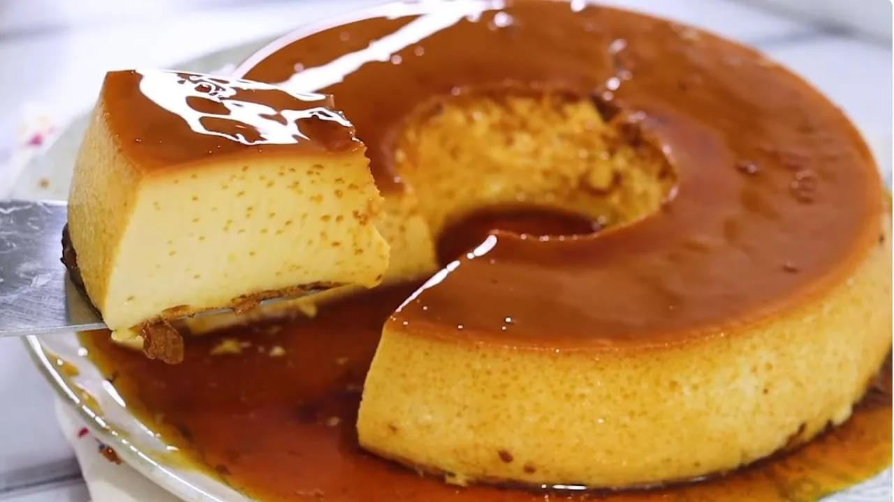

Pudim de Leite Condensado

⏱️ 1h + gelar
👨👩👧👦 Serve 8 porções
Ingredientes (pudim)
- 1 lata de leite condensado
- 1 lata de leite (use a lata do condensado como medida)
- 3 ovos
Ingredientes (calda)
- 1 xícara (chá) de açúcar
- ½ xícara (chá) de água
Modo de preparo
- Para a calda, derreta o açúcar em fogo baixo até ficar dourado, adicione a água com cuidado e deixe ferver até engrossar.
- Espalhe a calda na forma de pudim.
- No liquidificador, bata leite condensado, leite e ovos.
- Despeje na forma caramelizada.
- Cozinhe em banho-maria, no forno (180°C), por cerca de 50–60 minutos.
- Deixe esfriar, leve à geladeira e desenforme gelado.
 Papo de Panela
Papo de Panela